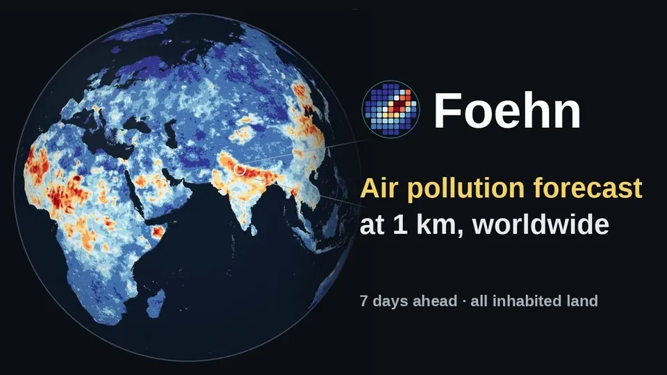
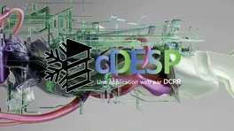
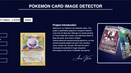
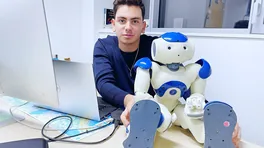
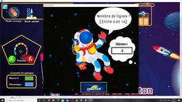

Recherche et projets
La prévision de la pollution de l’air grâce à un apprentissage profond guidé par la physique, et des projets plus anciens en logiciel, en robotique et en statistique.
Prévision de la pollution de l’air

Prépublication arXiv · 2026 · premier auteur
Foehn
Prévision probabiliste mondiale de la pollution de l’air à 1 km, jusqu’à une semaine à l’avance, sur toutes les terres habitées. Un modèle génératif qui calcule d’où vient l’air (FLEXGREEN) et apprend le reste par flow matching ; validé sur des milliers de stations face à la prévision opérationnelle.
Lire l’étude de cas →

npj Clim. Atmos. Sci. · 2026 · premier auteur
TopoFlow
Un Vision Transformer qui tient compte du relief, pour prédire la qualité de l’air à haute résolution sur la Chine. Des patchs qui suivent le vent, une attention sensible à l’altitude, six polluants. Publié dans npj Climate and Atmospheric Science (Nature Portfolio).
Lire l’étude de cas →

Prépublication arXiv · 2026 · premier auteur
CRAN-PM
Un Vision Transformer à deux branches et à résolutions croisées, qui prédit les PM2.5 journalières à 1 km sur toute l’Europe en 1,8 seconde, avec un transfert zero-shot (sans réentraînement) vers les États-Unis, le Canada et l’Inde.
Lire l’étude de cas →

Logiciel open source · v1.0
CranPM Studio
La version logicielle open source de CRAN-PM : un paquet Python et une démo web en ligne pour prévoir les PM2.5 à 1 km sur l’Europe. API stable, ligne de commande, compatible CUDA et ROCm, démo sur HuggingFace. RMSE de 6,85 µg/m³ à T+1.
Lire l’étude de cas →

SCIA 2025 · Springer LNCS
AQ-Net
Un réseau profond spatio-temporel pour la réanalyse de la qualité de l’air. Un LSTM avec attention et un kNN neuronal entraînable, appris sur les stations du nord de la Chine. Le réseau prédit la pollution là où il n’y a aucun capteur.
Lire l’étude de cas →
Projets antérieurs et annexes
-

Wabel Group × DCRR · 2024 cDESP Une plateforme SaaS de conformité pour les équipements sous pression du froid industriel, développée par Wabel Group pour DCRR. - Événement en direct · 22 déc. 2023 Enchères Pokémon avec un robot La première vente aux enchères de cartes Pokémon au monde coanimée par un robot humanoïde NAO, saluée par une lettre du cabinet du président de la République.
-

Application web de ML · 2023 Détection de cartes Pokémon Une application web en Flask et TensorFlow qui reconnaît les cartes Pokémon du Set de Base à partir d’une photo. -

INRIA Bordeaux · 2021–2022 LingoRob Une plateforme de crowdsourcing de corpus multilingues, développée dans l’équipe Mnemosyne de l’INRIA pour l’interaction humain-robot. -

Excel VBA · janv. 2020 · DUT STID Planche de Galton sous Excel La planche de Galton programmée sous Excel en VBA : la loi binomiale qui converge vers la courbe en cloche.